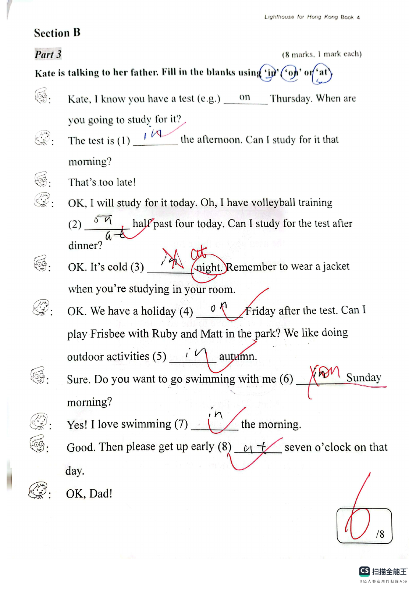
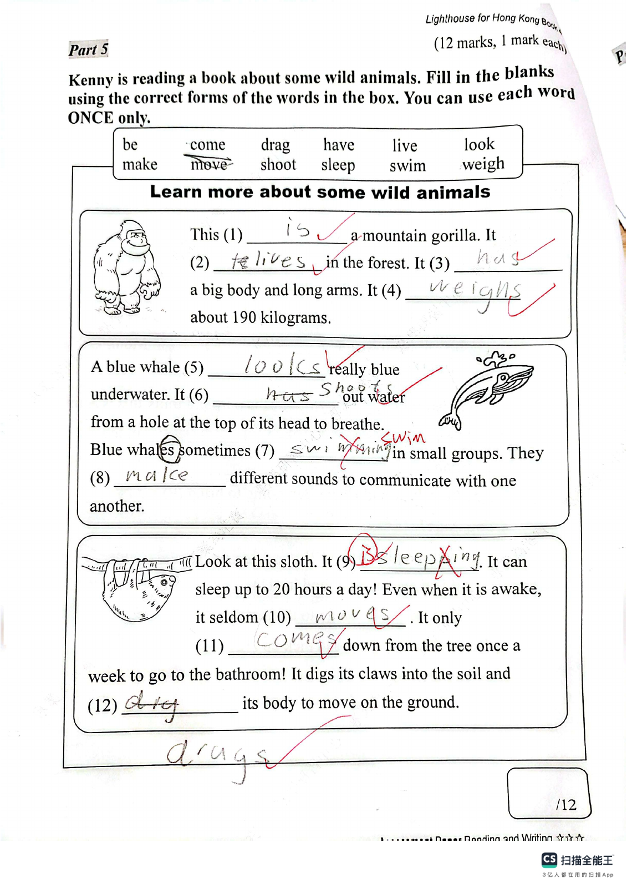

Answer: (a) 35 seconds; (b) 33 seconds or 37 seconds
已掌握
| # | 单词/词组 | 中文意思 | 例句/说明 | 已掌握 |
|---|---|---|---|---|
| noun 名词 | ||||
| 1 | parents | 父母 | My parents love me. | |
| 2 | page | 页码 | Please open your book to this page. | |
| 3 | monitor | 班长 | The monitor helps the teacher. | |
| 4 | uniform | 制服 | He wears a school uniform. | |
| 5 | Friday | 周五 | The school trip is on Friday. | |
| 6 | sound | 声音 | I heard a strange sound outside. | |
| verb 动词 | ||||
| 7 | catch | 抓住 | Try to catch the ball. | |
| 8 | pick | 采摘；挑选 | We pick apples from the tree. | |
| phrase 短语 | ||||
| 9 | school bus | 校车 | We take the school bus every morning. | |
| noun phrase 名词短语 | ||||
| 10 | police station | 警局 | We took the lost bag to the police station. | |
| adjective 形容词 | ||||
| 11 | soft | 柔软的 | The fur is soft. | |
| 12 | busy | 忙碌的 | Mum is busy cooking dinner. | |
| verb phrase 动词短语 | ||||
| 13 | tell a story | 讲故事 | I tell a story to my little brother. | |
| adverb 副词 | ||||
| 14 | usually | 通常 | I usually have breakfast at seven. | |
| uncategorized 未分类 | ||||
| 15 | floor | 楼层 | Our classroom is on the second floor. | |
| 16 | amazing | 很好的 | We watched an amazing magic show. | |
| 17 | win | 赢得 | Our team hopes to win the match. | |
| 18 | find | 找到 | I cannot find my pencil. | |
| 19 | notice | 通知 | A notice on the door says the library is closed. | |
| 20 | railway | 铁路 | The railway connects the two towns. | |
| # | 单词/词组 | 中文意思 | 例句/说明 | 已掌握 |
|---|---|---|---|---|
| adjective 形容词 | ||||
| 1 | wonderful | 精彩的 | We had a wonderful day. | |
| 2 | dangerous | 危险的 | The road is dangerous. | |
| 3 | false | 错误的 | The statement "A week has eight days" is false. | |
| 4 | sad | 难过的；伤心的 | I feel sad because I miss my friends. | |
| noun 名词 | ||||
| 5 | packet | 包；小包 | I bought a packet of biscuits. | |
| 6 | magazine | 杂志 | Read the magazine. | |
| 7 | genie | 精灵 | The genie grants a wish. | |
| 8 | signature | 签名（名词） | Please write your signature at the bottom of the form. | |
| 9 | moral | 道理 | The story has a moral. | |
| 10 | beef | 牛肉 | Is there any beef? Yes, there is. | |
| 11 | garlic | 大蒜 | I like vegetables with garlic. | |
| 12 | cafe | 咖啡馆 | We had drinks at a cafe. | |
| 13 | Chinese | 语文；中文 | Some pupils like Chinese. | |
| noun phrase 名词短语 | ||||
| 14 | department store | 百货商店 | We shop at the department store. | |
| 15 | high jump | 跳高 | He can do the high jump. | |
| 16 | Open Day | 开放日 | Open Day is on 1st March. | |
| 17 | the school concert | 学校音乐会 | The school concert is on the ninth of July. | |
| 18 | Test Week | 测试周 | Test Week is from 16th April to 20th April. | |
| 19 | a box of chicken wings | 一盒鸡翅 | May I have a box of chicken wings, please? | |
| 20 | a hot dog | 热狗 | May I have a hot dog, please? | |
| 21 | a spoon | 勺子 | Use a spoon to serve the soup. | |
| verb 动词 | ||||
| 22 | collect | 收集 | I collect stamps. | |
| 23 | put | 放；放置 | Please put the vegetables into the pot. | |
| verb phrase 动词短语 | ||||
| 24 | look at shells | 看贝壳 | We look at shells on the beach. | |
| 25 | sing carols | 唱圣诞颂歌 | We sing carols at Christmas. | |
| 26 | look at the moon | 赏月 | We look at the moon at night. | |
| uncategorized 未分类 | ||||
| 27 | concert | 音乐会 | We went to a concert last night. | |
| 28 | suitable | 合适的 | These shoes are suitable for running. | |
| 29 | campsite | 营地 | We put up our tent at the campsite. | |
| 30 | lantern | 灯笼 | We hung a red lantern by the door. | |
| # | 单词/词组 | 中文意思 | 例句/说明 | 已掌握 |
|---|---|---|---|---|
| time/date 时间日期 | ||||
| 1 | May | 五月 | May is the fifth month. | |
| 2 | June | 六月 | June is the sixth month. | |
| 3 | July | 七月 | July is the seventh month. | |
| 4 | November | 十一月 | November is the eleventh month. | |
| 5 | Saturday | 星期六 | Saturday is a weekend day. | |
| 6 | Sunday | 星期日 | Sunday is a weekend day. | |
| time unit 时间单位 | ||||
| 7 | year | 年 | A year has 12 months. | |
| 8 | minute | 分 | A minute has 60 seconds. | |
| numbers 数字 | ||||
| 9 | seven | 7 | Seven is 7. | |
| 10 | sixteen | 16 | Sixteen is 16. | |
| 11 | eighteen | 18 | Eighteen is 18. | |
| 12 | sixty | 60 | Sixty is 60. | |
| 13 | seventy | 70 | Seventy is 70. | |
| solid shape 立体图形 | ||||
| 14 | pentagonal prism | 五棱柱 | A pentagonal prism has pentagonal faces. | |
| geometry 几何 | ||||
| 15 | obtuse angle | 钝角 | An obtuse angle is greater than 90 degrees and less than 180 degrees. | |
| # | 单词/词组 | 中文意思 | 例句/说明 | 已掌握 |
|---|---|---|---|---|
| operations 运算 | ||||
| 1 | altogether | 一起 | How many are there altogether? | |
| 2 | be left | 剩下的 | How many apples will be left? | |
| geometry 几何 | ||||
| 3 | perpendicular line | 垂直线 | Perpendicular lines meet at a right angle. | |
| 4 | obtuse angle | 钝角 | An obtuse angle is greater than 90 degrees and less than 180 degrees. | |
| 5 | grid | 网格 | A grid helps us find positions. | |
| 6 | line segment | 线段 | Draw a line segment. | |
| question word 题目词 | ||||
| 7 | compare | 比较 | We compare two numbers. | |
| 8 | calculate | 计算 | Calculate the answer. | |
| 9 | match | 匹配 | Match the number to the word. | |
| place value 位值 | ||||
| 10 | tens | 十位 | The digit is in the tens place. | |
| comparison 比较 | ||||
| 11 | less | 更少的；小于 | 8 is less than 10. | |
| time/date 时间日期 | ||||
| 12 | non-leap year | 平年 | A non-leap year has 365 days. | |
| 13 | minute hand | 分针 | At three o'clock, the minute hand points to 12. | |
| operations calculation 运算 | ||||
| 14 | multiplication | 乘法 | Multiplication can use times. | |
| 15 | mixed operations | 混合运算 | Mixed operations use more than one operation. | |
| 16 | remainder | 余数 | The remainder is left after division. | |
| 17 | divide A by B | A 除以 B | Divide A by B. | |
| teacher math vocabulary 老师数学词汇 | ||||
| 18 | between ... and ... | 在……和……之间 | 7 is between 6 and 8. | |
| currency money 货币 | ||||
| 19 | change | 零钱 | Count the change after paying. | |
| measurement 测量 | ||||
| 20 | fill | 填满 | Fill the jug with water. | |
| 21 | millimeter | 毫米 | One millimeter is one tenth of a centimeter. | |
| 22 | balance | 天平 | We use a balance to compare the weights of two objects. | |
| 23 | gram | 克 | One gram is one thousandth of a kilogram. | |
| 24 | kilogram | 千克 | One kilogram is 1,000 grams. | |
| 25 | width | 宽度 | The rectangle has a length of 8 cm and a width of 5 cm. | |
| data charts 统计图 | ||||
| 26 | pictogram | 象形图 | Read the pictogram. | |
| 27 | block chart | 方块图 | Read the block chart. | |
| 句型结构 | ||||
| 28 | Angle ... is larger than Angle ... | 角......大于角...... | Angle A is larger than Angle B. | |
| 29 | ... is to the north of ... | ......位于......的北侧。 | The playground is to the north of the hall. | |
| plane shape 平面图形 | ||||
| 30 | leg | 腰（梯形的非平行边） | A leg of a trapezium is a non-parallel side. | |

